Bienvenue
Je suis Ana Tatrishvili, Junior Designer & Développeuse
Je suis Ana Tatrishvili, Junior Designer & Développeuse
Étudiante en BUT MMI (Métiers du Multimédia et de l'Internet) à l'IUT de Troyes, je suis passionnée par la création de contenus numériques innovants. Mon parcours m'a permis de développer des compétences solides en design, développement web et production audio et vidéo.
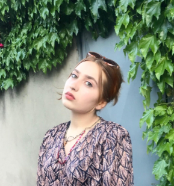
Découvrez mes réalisations
Design d'identité visuelle et animation pour un cinéma
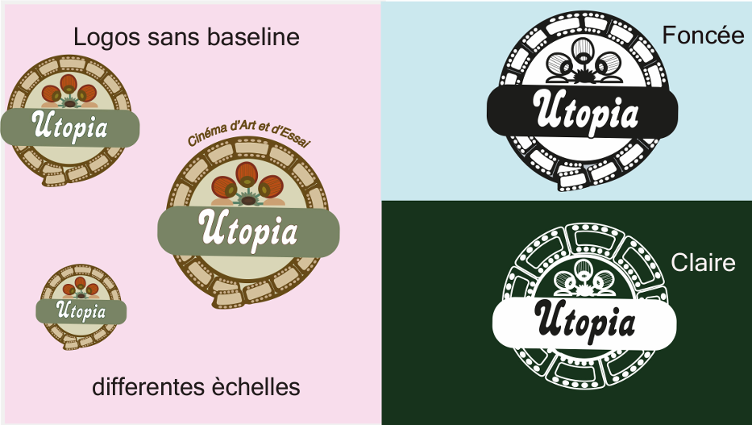
Création d'un logo minimaliste avec Illustrator, utilisant le coquelicot comme symbole de liberté. Typographie : Demo Melody Groove Regular. Ajout d'une pellicule de film pour lier tradition et modernité. Développement d'une animation SVG avec effet de zoom fluide. Le coquelicot représente la liberté d'expression, essentielle au cinéma.
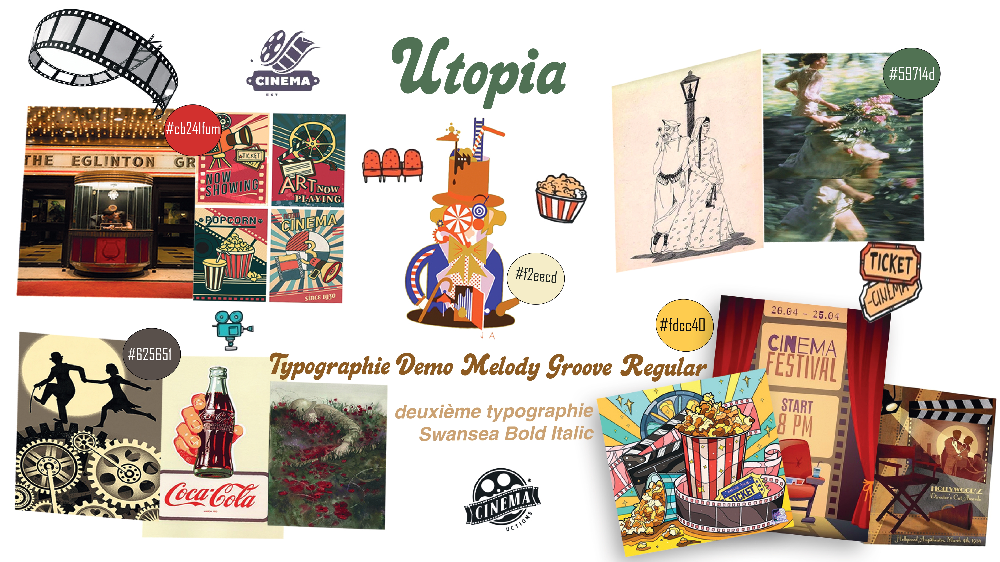
Analyse sectorielle du cinéma UTOPIA, étude de son histoire et valeurs. Création d'un moodboard (2272 x 1278 px) sur Photoshop, intégrant des éléments écologiques (vert, jaune) et vintage (rouge, jaune) pour refléter l'identité du cinéma. Fusion réussie entre tradition et modernité.
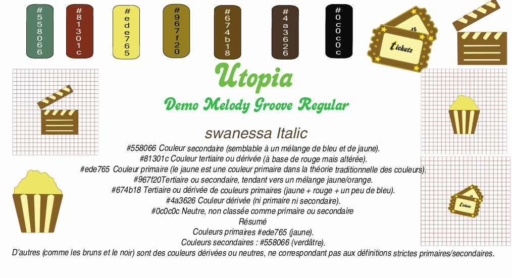
Développement de pictogrammes vectorisés dans une grille pour la symétrie, respectant les règles d'ergonomie et d'accessibilité. Création d'un système de design cohérent pour l'ensemble de l'identité visuelle. Optimisation pour différentes tailles d'affichage.
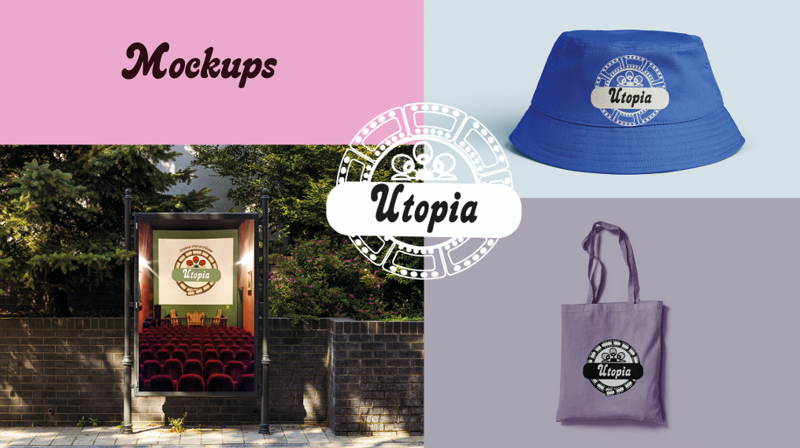
Création de mockups pour des supports marketing (chapeaux, sacs en tissu) ciblant le public jeune. Intégration du logo avec Photoshop. Définition des zones de sécurité et règles d'utilisation de l'identité visuelle. Design adapté aux différents supports.
Plateforme web de réservation de services développée avec Symfony
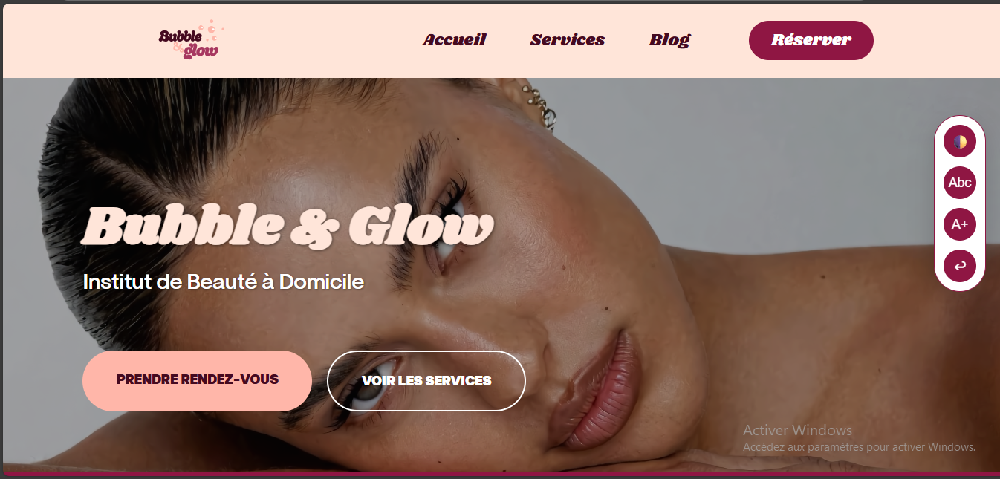
Une plateforme complète de réservation de services permettant aux utilisateurs de découvrir, explorer et réserver des services disponibles. Le site offre une expérience utilisateur fluide avec une navigation intuitive, un système de filtrage avancé et une gestion sécurisée des réservations. La plateforme a été développée avec un accent sur l'accessibilité.
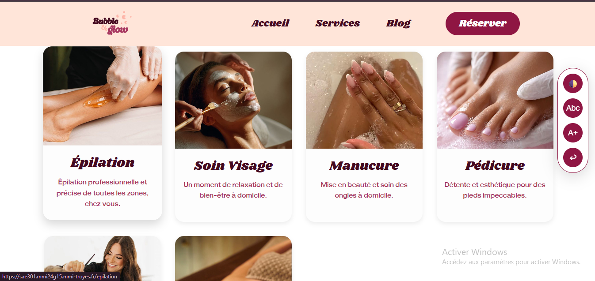
Catalogue complet des services disponibles avec descriptions détaillées, prix, disponibilités et avis utilisateurs. Les services sont présentés de manière élégante avec des images haute qualité et des informations essentielles pour aider les utilisateurs à prendre leurs décisions.
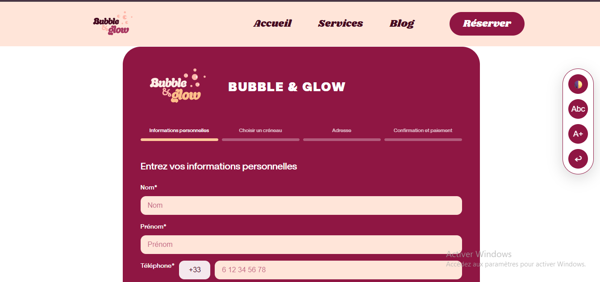
Système de réservation intuitif permettant aux utilisateurs de sélectionner une date, une heure et des options de service. Le processus de réservation a été optimisé pour être rapide et sans friction, avec validation côté serveur et client pour garantir l'intégrité des données.
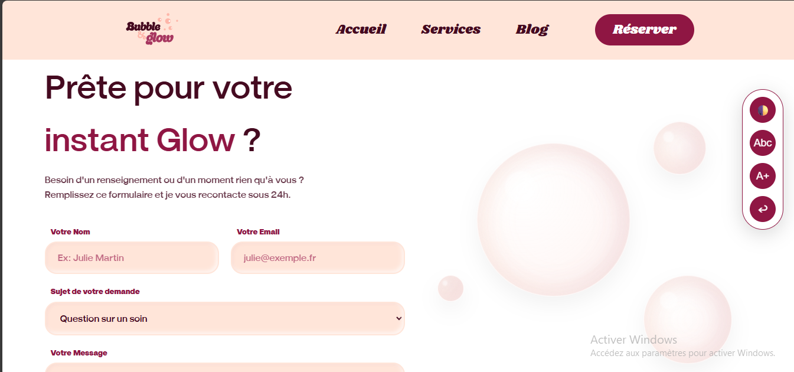
Page de contact complète permettant aux utilisateurs de nous envoyer des messages directement. La page intègre un formulaire interactif avec validation JavaScript côté client et serveur. Les utilisateurs peuvent poser des questions sur les services, demander des devis ou signaler des problèmes. Le formulaire inclut des champs pour l'email, le sujet, le message et la catégorie de demande avec une soumission sécurisée.
Sélection de travaux personnels et explorations visuelles en design graphique, retouche d'image, composition et illustration vectorielle.
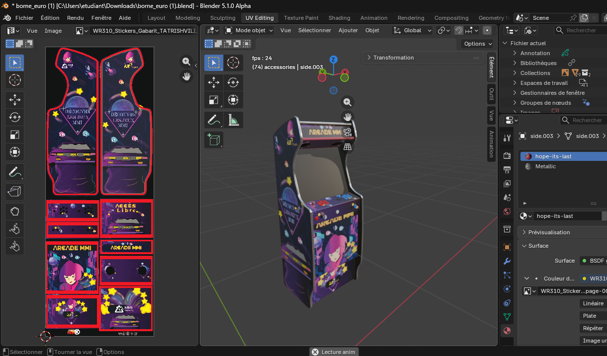
Conception de l'identité visuelle complète d'une borne d'arcade avec une esthétique Synthwave rétro-futuriste. J'ai intégré les éléments clés des jeux disponibles et créé une palette de violets profonds avec des accents néon pour attirer l'œil. Le projet a impliqué la modélisation 3D sur Blender pour visualiser le rendu final et le respect strict des gabarits techniques pour l'impression grand format.
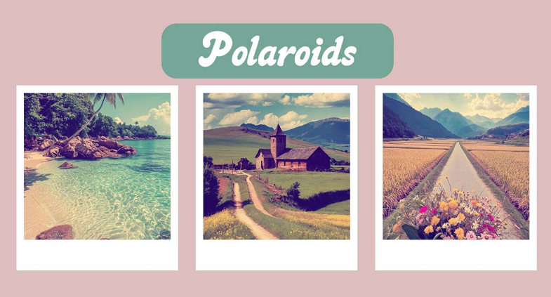
Création d'un script d'action sur Photoshop permettant de générer automatiquement des polaroids personnalisés à partir d'images au format RAW. Le processus inclut redimensionnement, application de filtres colorés, équilibrage de lumière, dégradés, effets photo vintage et export automatique. L'objectif était de simplifier et styliser la présentation de souvenirs visuels.
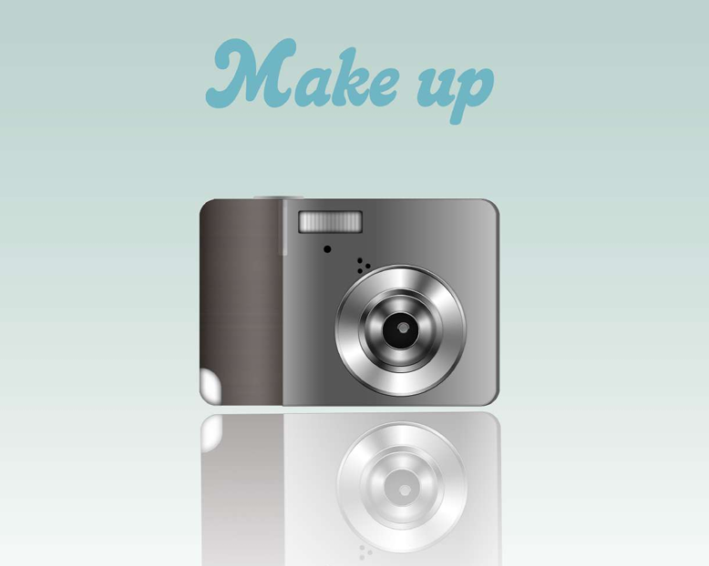
À partir d'une simple forme de caméra, j'ai exploré différents effets dans Photoshop et Illustrator : incrustations de dégradés, lumière interne, textures, motifs, ombres portées, contours. Cet exercice m'a permis de mieux comprendre l'utilisation combinée des calques de réglage, des modes de fusion et de la lumière pour créer un effet "make-up digital".
Réalisation d'une carte isométrique au format A1 dans Illustrator, construite à partir d'une grille géométrique précise. Chaque îlot représente une facette de ma personnalité, imaginée et développée graphiquement avec une identité propre. Le premier îlot met en scène mon univers créatif autour du design et du multimédia. Les deux suivants traduisent visuellement mes passions personnelles à travers des éléments symboliques, une composition équilibrée et une palette cohérente.
Visualisation de données et conception d'affiche pour le Festival MMI
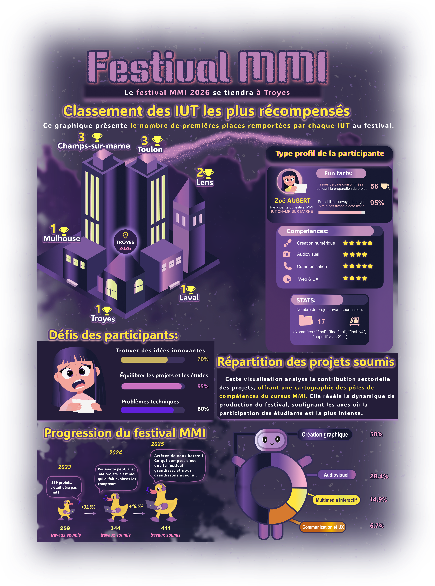
Pour le cours WR310 Data Visualization, j'ai conçu une affiche présentant une visualisation de données sur le Festival MMI. Le projet a impliqué la collecte, le nettoyage et la sélection des données pertinentes. J'ai organisé le contenu en plusieurs sections avec des représentations visuelles appropriées, tout en intégrant des références subtiles à l'identité du Festival MMI. Un accent particulier a été mis sur la hiérarchie visuelle pour guider le spectateur à travers les informations. L'identité visuelle utilise le violet de l'officiel du Festival MMI, créant ainsi une connexion visuelle authentique tout en maintenant clarté et accessibilité.
Visualisation et analyse de données (Open Data University)
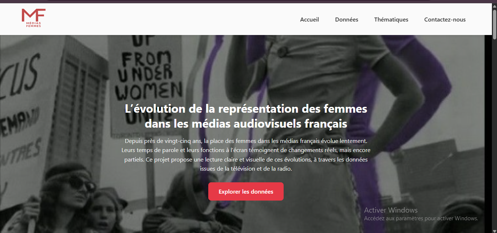
Projet universitaire mené dans le cadre de l'Open Data University — sprint de 3 jours en équipe. Nous avons collecté, nettoyé et analysé des jeux Open Data pour visualiser l'évolution de la représentation des femmes dans les médias audiovisuels français. L'objectif : transformer des données brutes en récits visuels clairs et comparables.
J'ai assuré la structure technique du projet (dépôt GitHub, configuration serveur Apache, activation du HTTPS), préparé les fichiers JSON et intégré les visualisations dans le site via JavaScript. Notre travail est publié et réutilisable sur DataGouv.
Création d'une interview vidéo professionnelle avec techniques de prise de vue et montage
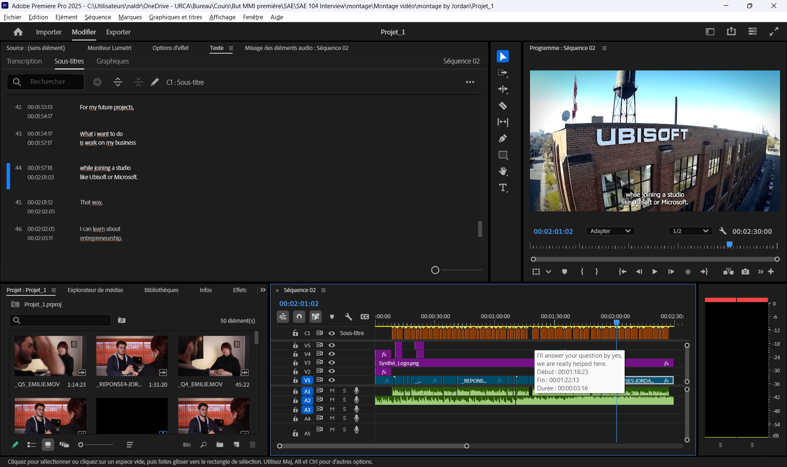
Réalisation d'une interview vidéo professionnelle au Technopôle de Troyes, mettant en valeur le parcours d'un entrepreneur. Utilisation de techniques avancées de prise de vue, d'éclairage et de montage pour créer une narration engageante et fluide.
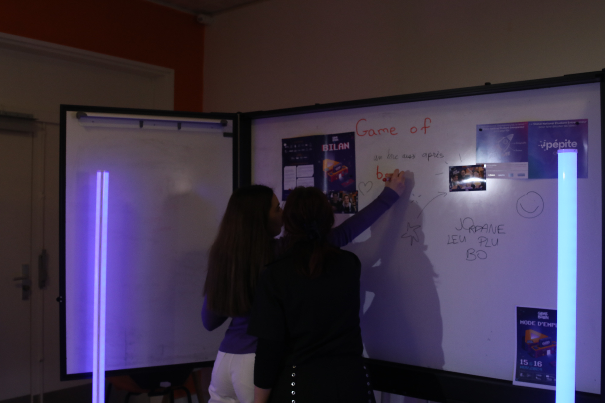
La phase cruciale de préparation d'un tournage, montrant l'attention aux détails et l'organisation nécessaire pour une production réussie. Mise en place du matériel, vérification de l'éclairage et des paramètres de la caméra.
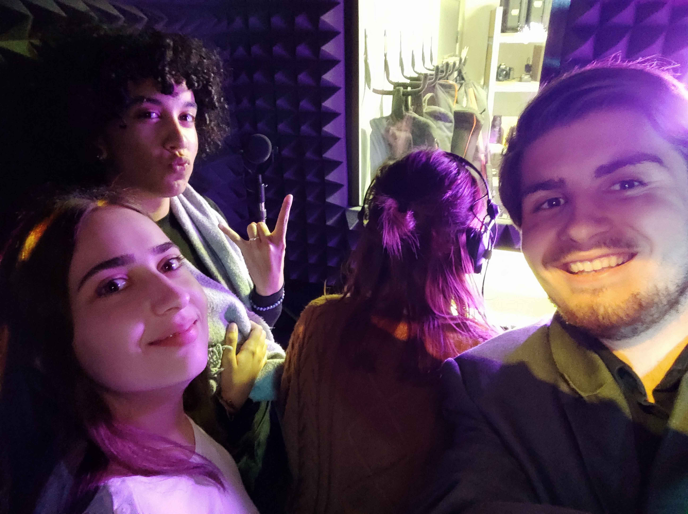
Processus de montage professionnel sur Adobe Premiere Pro, incluant le découpage des séquences, l'ajout de transitions fluides, et l'optimisation de la qualité audio et vidéo pour un rendu final de haute qualité.
Projet photographique complet : stylisme, prise de vue et postproduction d’un centre de table festif à destination commerciale.
Pour ce projet, j’ai réalisé un packshot d’un centre de table traditionnel de Pâques, combinant éléments culinaires et décoratifs L'objectif principal de ce projet était de vendre le produit et de le rendre intéressant pour les clients à l'acheter, ce projet m'a donc permis d'en apprendre davantage sur la stratégie marketing produit ainsi que sur l'aspect photographie. Tout a commencé par une mise en scène minutieuse du produit, en soignant la composition, la lumière naturelle et l'ambiance printanière. J’ai réalisé les prises de vue en format RAW pour conserver toute la qualité des détails. Ensuite, j’ai utilisé Adobe Lightroom pour Corriger l’exposition et la balance des blancsTravailler la lumière, et le contraste et les couleurs pour faire ressortir les textures Enfin, j’ai poursuivi le travail dans Adobe Photoshop pour Appliquer des retouches fines (nettoyage, détails)
Gabarit conçu pour la page d'accueil du site Bubble & Glow (index)
J'ai créé cette maquette pour le site Bubble & Glow afin de garantir une interface cohérente et une navigation fluide. Mon objectif était de concevoir une expérience utilisateur intuitive et facile à comprendre. J'ai accordé une attention particulière à l'accessibilité, à la hiérarchie visuelle et à la clarté de la navigation pour que les utilisateurs puissent parcourir le site sans confusion.
Guitariste Solo & Organisatrice d'Événements (2023, Géorgie)
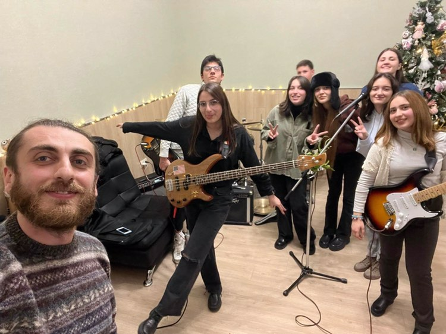
En Géorgie en 2022, j'ai intégré le groupe de musique de mon lycée en tant que guitariste solo et organisatrice d'événements. Notre objectif était de créer une plateforme durable pour les jeunes musiciens en organisant des concerts annuels, des spectacles de talents et un carnaval scolaire, tout en développant notre répertoire musical.
construire un univers immersif à choix multiples
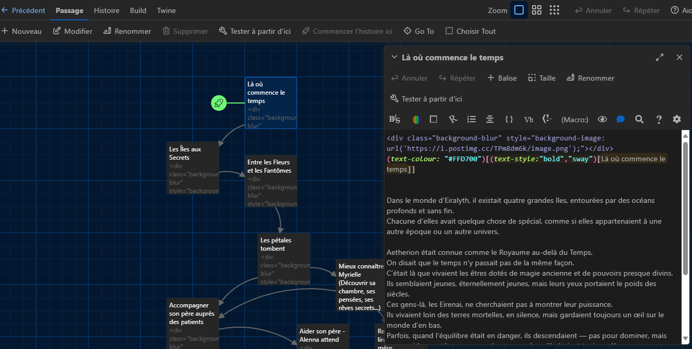
J’ai créé une histoire interactive à choix multiples à l’aide du logiciel Twine, en développant un récit original, Pour enrichir l’expérience du lecteur, j’ai personnalisé l’apparence visuelle du projet en modifiant le fichier CSS, en intégrant des images de fond, et en utilisant des balises HTML et macros (comme text-colour et text-style) afin de styliser le texte. Le résultat est une narration immersive et dynamique, à la fois narrative et visuelle.
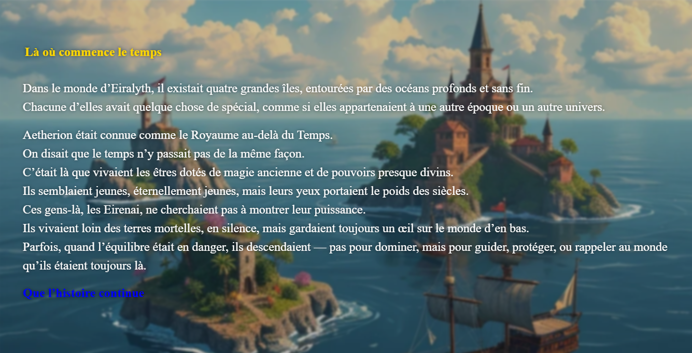
Cette image montre le début de l'histoire interactive, où le lecteur fait ses premiers choix.
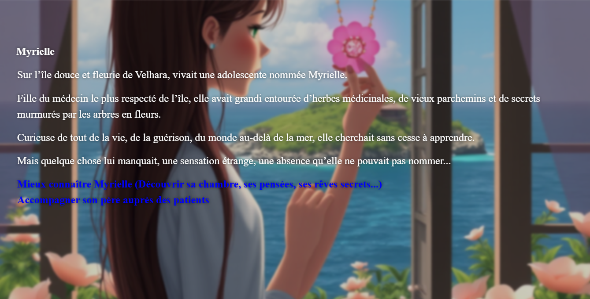
Cette section illustre la structure narrative du récit interactif, Chaque bloc représente une étape de l’histoire, reliée aux autres par des choix interactifs qui orientent le déroulement. J’ai intégré du code HTML et CSS personnalisé afin de styliser le texte, ajouter des effets visuels et insérer des images.
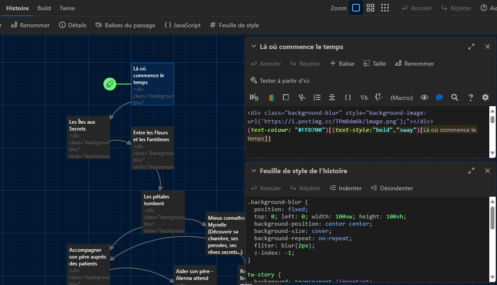
Ce code CSS personnalisé permet de styliser le texte, ajouter des effets visuels et insérer des images.